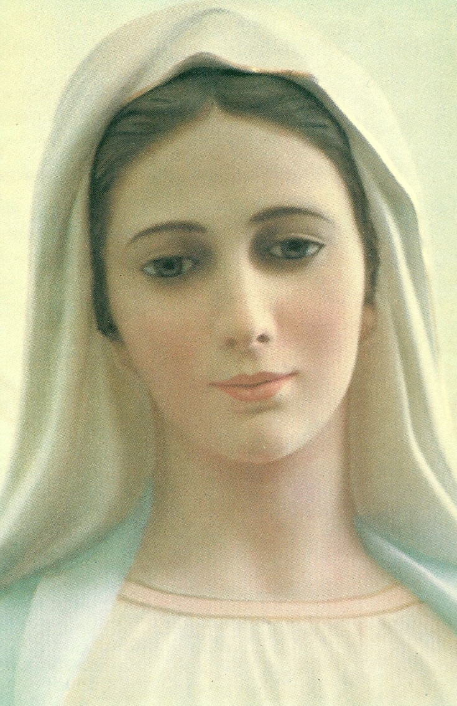

"NOSSA SENHORA DE MEDIUGÓRIE"

"A história admirável das Aparições e a presença constante da MÃE DE DEUS entre nós"
=ÍNDICE=
- PRELÚDIO
- INÍCIO DAS APARIÇÕES
- AS APARIÇÕES CONTINUAM
- NOSSA MÃE TÃO AMOROSA
- A VIRGEM PRESENTE NO MUNDO


 - PRELÚDIO
- PRELÚDIO